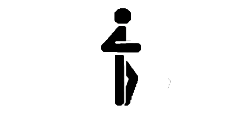
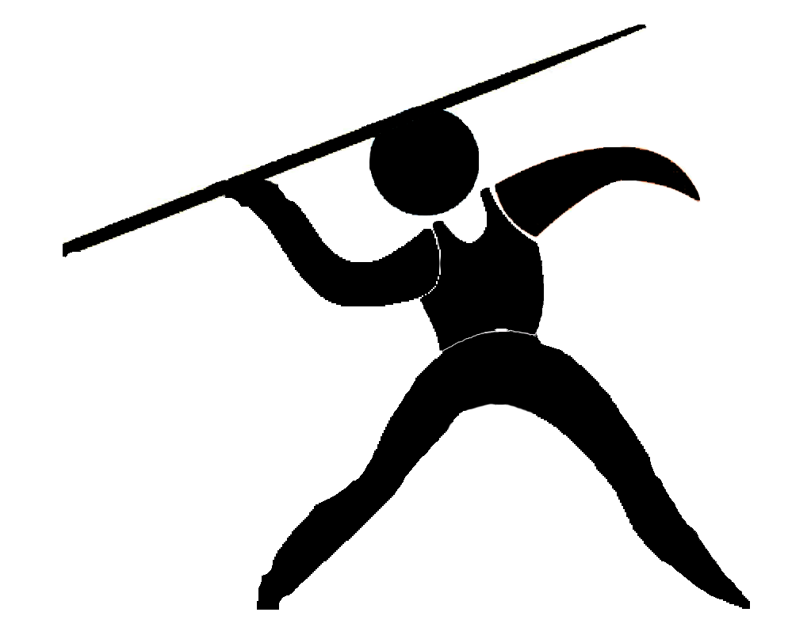

Найвизначніші моменти з легкої атлетики в історії спорту
Легкоатлетичні вправи проводилися з метою фізичної підготовки, а також для проведення змагань ще в глибокій старовині. Але історія легкої атлетики, як прийнято вважати, почалася зі змагань з бігу на олімпійських іграх Стародавньої Греції
(776 рік до нашої ери).
Сучасна легка атлетика почала свій шлях з окремих спроб в різних країнах проводити змагання в бігу, стрибках і метаннях. Зафіксовані результати в стрибку з жердиною в 1789 р. (1 м 83 см, Д. Буш, Німеччина), у бігу на одну милю в 1792р. (5.52,0, Ф. Поуелл, Велика Британія) і 440 ярдів в, 1830 р. (2.06,0, А. Вуд, Велика Британія), в стрибку у висоту в 1827 р. (1.57,5, А. Вілсон, Велика Британія), в метанні молота в 1838 р. (19 м 71 см, Район, Ірландія), в штовханні ядра в 1839 р. (8 м 61 см, Т. Каррадіс, Канада) та ін. Вважається, що початок історії сучасної легкої атлетики поклали змагання з бігу на дистанцію близько 2 км учнів коледжу в м. Регбі (Англія) в 1837 р., після чого такі змагання стали проводитися в інших навчальних закладах Англії.
Пізніше в програму змагань стали включати біг на короткі дистанції, біг з перешкодами, метання ваги, а в 1851 р. — стрибки в довжину і висоту з розбігу. У 1864 р. між університетами Оксфорда і Кембриджа були проведені перші змагання, що стали в подальшому щорічними, що поклали початок традиційним двостороннім матчам.
У 1865 р. був заснований Лондонський атлетичний клуб, який популяризував легку атлетику, проводив змагання і спостерігав за дотриманням статусу о аматорстві. Вищий орган легкоатлетичного спорту — любительська атлетична асоціація, — який об'єднав всі легкоатлетичні організації Британської імперії, був організований в 1880 р.
Дещо пізніше, ніж в Англії, стала розвиватися легка атлетика в США (атлетичний клуб в Нью-Йорку організувався в 1868 р., студентський спортивний союз — в 1875 р.), де швидко досягла широкого розповсюдження в університетах. Це забезпечило в наступні роки (до 1952 р.) провідне положення американських легкоатлетів у світі. До 1880—1890 р. в багатьох країнах світу були організовані любительські легкоатлетичні асоціації, які об'єднали окремі клуби, ліги і отримали права вищих органів по легкій атлетиці.
Широкий розвиток сучасної легкої атлетики пов'язано з відродженням Олімпійських ігор (1896 р.), в яких, віддаючи данину давньогрецьким олімпіад, їй відвели найбільше місце. І сьогодні Олімпійські ігри — потужний стимул для розвитку легкої атлетики в усьому світі.
Початок поширенню легкої атлетики в Російській імперії було покладено в 1888 р., коли в Тярльово, поблизу Петербурга, був організований спортивний гурток. У тому ж році там було проведено перше в Росії змагання з бігу. Вперше першість Росії з легкої атлетики проходило в 1908 р. У ньому взяли участь близько 50 спортсменів.
У 1911 р. створюється Всеросійський союз любителів легкої атлетики, який об'єднав близько 20 спортивних ліг Петербурга, Москви, Києва, Риги та інших міст.
У 1912 р. російські легкоатлети (47 осіб) вперше брали участь в Олімпійських іграх — в Стокгольмі. Через слабку підготовленість спортсменів та погану організацію виступ російських легкоатлетів пройшло невдало — ніхто з них не посів призового місця.
Після Великої Жовтневої соціалістичної революції велику роль у розвитку легкої атлетики зіграв Всевобуч. За його ініціативою в низці міст відбулися великі змагання, в програмі яких головне місце відводилося легкої атлетики: в Омську — I Сибірська олімпіада, в Єкатеринбурзі — I приуральська олімпіада, в Ташкенті — Середньоазіатська, в Мінеральних Водах — Північно-Кавказька. У 1922 p. в Москві вперше було проведено першість РРФСР з легкої атлетики. Перші міжнародні змагання радянських легкоатлетів відбулися в 1923 р. Вони зустрілися зі спортсменами робочого спортивного союзу Фінляндії.
Види дисциплін та їх короткий опис:
Біг
|

Хода
|

Стрибки
|

Метання
Крім того, до них слід зарахувати метання малого м'яча і гранати, які вважаються прикладними видами. |